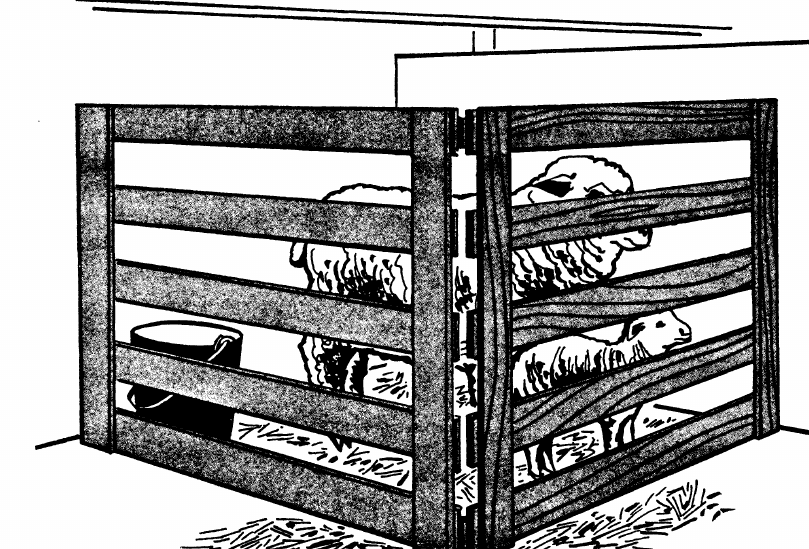
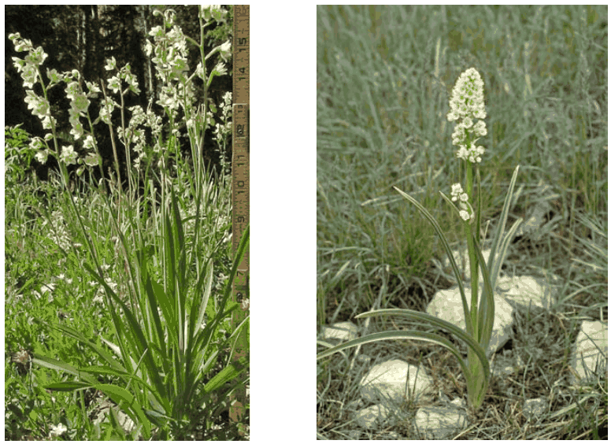
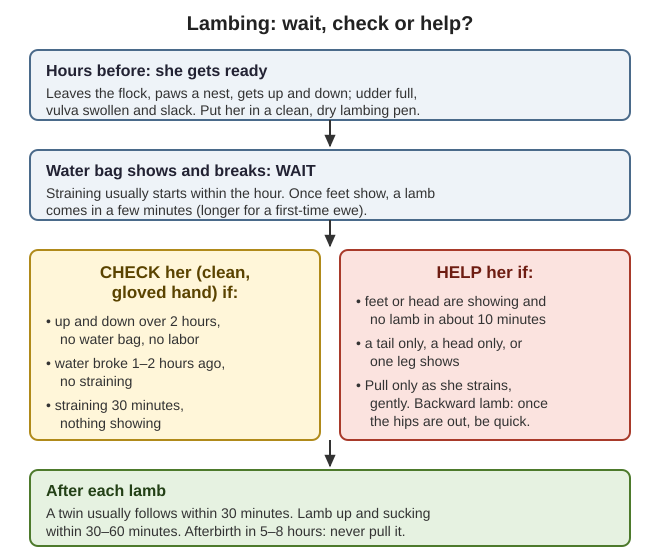
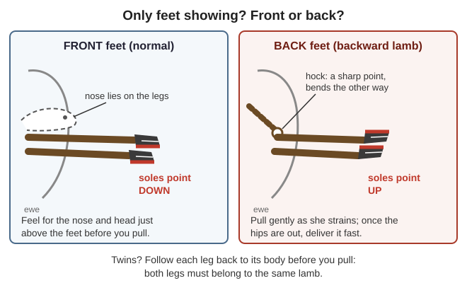
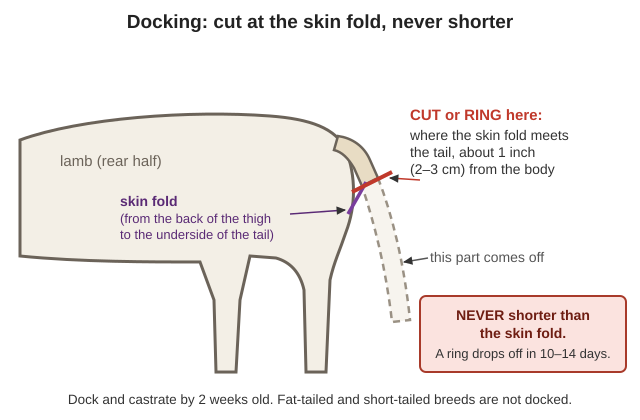
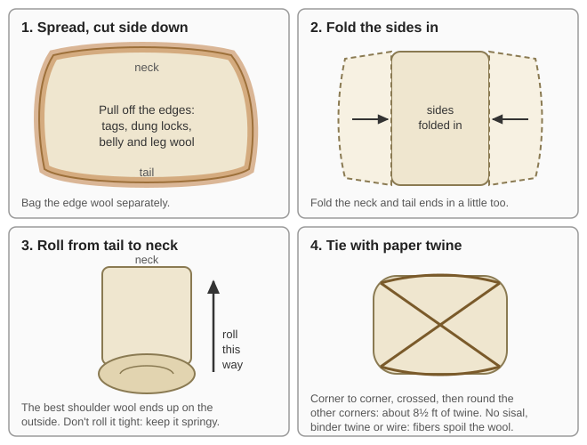
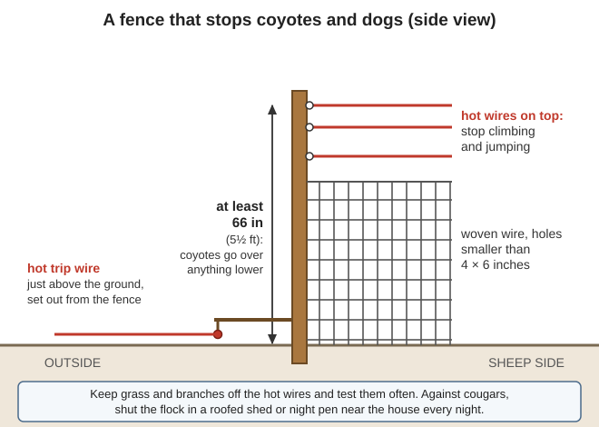

📘 Guides › 🐐 Animals · 🆘 Emergency · 📇 Index A–Z · 💬 Ask
How to keep a small flock of sheep with no feed store, no vet and no fridge: choosing meat, wool, milk and hair sheep for our wet winters, fences and night pens against coyotes and cougars, pasture and hay, the plants that poison sheep here, selenium, breeding and lambing, orphan lambs, docking and castration, shearing by hand, washing wool at home, hooves, worms, sickness, humane slaughter, sheepskins, sheep milk, and how many sheep a family needs. Spinning, weaving and tanning are in the Clothing, Leather & Shoes guide; cheese and butter are in the Milk, Butter & Cheese guide. The sheep and wool books are in Animals\Goats-Sheep, no-vet medicine and humane killing in Animals\Veterinary, slaughter in Animals\Cattle-Horses-Pigs, predators, guardian dogs and fire in Animals\Planning-Predators-Toxic-Plants, poisonous plants in Wild-Plants, and hide tanning in Trapping. Sheep and goats share many problems; the Goats guide says more on some of them.
The short version
- Pick sheep for wet winters. Fine-wool breeds "do not, however, do well under wet conditions"; hair sheep and medium-wool sheep do (Raising Healthy Sheep, p. 16). Keep them outdoors with an open shed: shut indoors they get pneumonia (p. 130).
- Shut the flock in a pen near the house every night. Coyotes, dogs, bears and cougars all kill adult sheep (pp. 132–133). No barbed wire (OSU EC1646, p. 1).
- Copper kills sheep. Never feed them goat mineral, cattle mineral or pig feed (No Animal Doctor, p. 74). But Oregon forage is short of selenium: keep a covered selenium sheep mineral out all year (OSU EM 9094, pp. 1–5).
- Hungry sheep eat poison. Death camas is one of the first green plants in spring, and sheep are the animal most likely to eat lupine (WSU, p. 3; p. 15).
- Lambing: if feet show and no lamb comes in about 10 minutes, help her. Every lamb needs colostrum (first milk) in its first hour or two (Raising Healthy Sheep, p. 65; pp. 110–111).
- Deworm only the sheep that need it (pale eyelids, thin, scouring). Dewormers will run out, and worms already resist them (p. 124; UF VM271, p. 2).
- Some sheep diseases infect people: sore-mouth scabs, abscess pus, aborted lambs. Wear gloves; pregnant women stay away from a flock that is aborting (Raising Healthy Sheep, pp. 106, 109, 114).
- For a family: 1 acre of good pasture carries 5–6 ewes (2–3 if unimproved); each ewe needs about 500 lb of hay for winter; a 100-lb lamb gives about 35 lb of meat (USDA FB 2222, pp. 8–13).
"Sheep produce two crops a year—lambs and wool—as well as meat for the family," with little labor and cheap housing (USDA FB 2222, p. 4); they do well on poor forage (Raising Healthy Sheep, p. 34).
| Type | Good for | Fit for the valley |
|---|---|---|
| Hair sheep (Katahdin, St. Croix, Dorper) | Meat; "very poor quality fiber" | Best for wet ground: they "do well in areas with high rainfall, humidity and heat" (p. 16; Katahdin, p. 19). No shearing: they shed (rule of thumb) |
| Fine wool (Rambouillet, Merino) | Fine garment wool and meat | Poor: they thrive dry and "do not … do well under wet conditions" (p. 16) |
| Medium and long wool, dual purpose (Texel, Romney, Corriedale, Suffolk) | Meat lambs, milk, wool for outer garments, blankets and carpets | Good family sheep (p. 16; Texel, p. 20). Long wools stand wet pasture (rule of thumb) |
| Milk sheep (Awassi, East Friesian) | Milk for cheese and yogurt; lambs weaned at 30–45 days | Little wool (pp. 16–17; Awassi, p. 21) |
| Year-round breeders (Dorset) | Lambs in any season | Breed "even in temperate zones" (p. 52) |
Very prolific and big breeds need more and better feed (p. 17); ask local keepers which breeds have done well here (p. 18).
Buying (FB 2222, pp. 4–5; Raising Healthy Sheep, pp. 28–29): fall is cheapest, and yearling or 2-year-old ewes have the most years ahead. Don't buy bred ewes (you won't know when they lamb), lame ewes (foot rot), ewes with lumpy udders or past mastitis, or worn or missing teeth. Look for a bright, alert sheep with a clean rear, free walk, clear eyes, teeth that meet the pad, normal hooves, joints not swollen, a soft udder with two good teats, and in a ram large, even, firm testicles. Feel under the wool: a fleece hides a thin sheep (p. 36). Age by the teeth: one pair of big front teeth at 1 year, two at 2, three at 3, all four at 4; then "spreaders," "broken mouths" or "gummers" (pp. 29–30; photos). Keep new sheep apart for 30 days (p. 103) and deworm them before they join the flock (p. 123).
Shelter (Raising Healthy Sheep, pp. 130–131; FB 2222, pp. 5–7; OSU EC1646, p. 2):

A lambing pen from one hinged panel across a corner: each half 3–4 ft high and 4–5 ft long, gaps no more than 3–4 inches (USDA FB 2222, p. 7).Fences (EC1646, p. 1): high-tensile, welded or woven wire, stock panels, electric. No barbed wire. Netting tangles sheep; use it only where you watch. Wool insulates sheep from an electric fence: shear, or use a stronger charge. Electric works if sheep are "carefully trained with it" (FB 2222, p. 7) and "can be run off of solar charged batteries" (Raising Healthy Sheep, p. 131). Walk the fence often: fallen limbs, grass on the wire and a dead charger let predators in. Posts last longest cut from heartwood (FB 2222, p. 8).
Handling: lead a sheep with one hand under the jaw and one behind the tail, never by the wool or legs (Slaughter and Preservation of Meat, p. 69). To set a sheep on its rump: hand under the chin, other hand on the rump, sheep against your legs; turn its head away from you and press the rump down until it sits (Raising Healthy Sheep, p. 78).
Pasture is the cheapest feed. Sheep like short, fine grass; bluegrass with clover, fescue and orchardgrass is excellent. Start grazing when spring growth is 3–6 inches. 1 acre of good pasture carries 5–6 ewes; unimproved, 2–3 (FB 2222, pp. 8–9); rape and kale give summer grazing (p. 9). Here, valley soils are "used mainly for irrigated hay and pasture" (NRCS soil survey, pp. 7–9), so unwatered pasture browns from about June to the October rains: plan hay for summer as well as winter (rule of thumb). Serpentine ground grows thin forage, "very high in … magnesium and very low in calcium" (p. 49): feed sheep there hay grown elsewhere (rule of thumb). Stubble, crop tops and root crops are good sheep feed (Raising Healthy Sheep, pp. 41–42).
Hay and grain (FB 2222, pp. 9–10): 3–4 lb of hay a day per ewe, from when they leave fall pasture until they are back on grass after lambing, about 5 months: about 500 lb per ewe. Legume hay is best; with grass hay add protein (oil meal, peas or beans: Raising Healthy Sheep, p. 37). Grain only about 100 days a year: ½–¾ lb a day from 30 days before lambing until spring grass, about 75 lb per ewe. Keep grain under half the diet (p. 40) and change any feed over 7–10 days (p. 95).
Feed by the season (Raising Healthy Sheep, pp. 45–47):
Body condition: put your hands on the backbone, ribs and hips. Too thin: sharp bones, wasted muscle; too fat: rolls over rump and brisket. Both breed badly, lamb badly and get pregnancy disease (pp. 47–49; p. 49). Water (p. 35): about 1 gallon a day for a ewe on dry feed, 1½ nursing lambs, ½ for a growing lamb; they drink more if it is warmed in winter (FB 2222, p. 9).
📷 Not sure what's growing in the pasture? Photograph it with the plant identifier (🧮 Tools tab): it suggests a name and flags poisonous groups. Then check that name against this list.
Most poisonings come from hungry sheep: moved to new ground, trailed through bad range, or out in early spring when poisonous plants are the only green ones. Keep them fed, and move them off ground where the feed is gone (Raising Healthy Sheep, pp. 96–97). The "where" column is local knowledge (rule of thumb).
| Plant | Where | What the books say about sheep |
|---|---|---|
| Death camas | Spring meadows, rocky foothills | One of the first green plants; "Sheep are most likely to be affected." Froth, staggering, death in hours to days (AIB 415, pp. 34–35) |
| Lupine | Dry hillsides | "Sheep are the most likely species to ingest lupines"; seeds and young plants worst; the poison passes into milk (WSU, p. 15). Heavy losses when hungry sheep are trailed through in late summer (AIB 415, p. 64) |
| Poison hemlock, water hemlock | Ditches, creek banks | 4–8 oz of green poison-hemlock leaves can kill a sheep (AIB 415, p. 82); water hemlock roots are deadliest (WSU, p. 13) |
| Chokecherry, wild cherry | Fencerows | Cyanide; losses "when sheep graze chokecherry in the spring"; wilting and frost make it worse (AIB 415, p. 26) |
| Yew, rhododendron, azalea, laurel | Shady creeks; hedges | Yew can kill before signs show (AIB 415, p. 113); never feed hedge trimmings (WSU, p. 2). Azaleas: vomiting, bloat, tremors (p. 15) |
| Oak | Oak woods | Young leaves, buds and green acorns; poisonings in spring and fall "in sheep and cattle" (WSU, p. 27) |
| Milkweed, dogbane | Ditches, field edges | Heart poisons; most cases are in sheep (WSU, p. 31; p. 6) |
| St. Johnswort | Pastures, roadsides | Sunburn-like sores on white skin; "recently sheared sheep are especially susceptible"; dry plants in hay too (AIB 415, p. 100) |
| Bracken fern | Woods edges, burns | Sheep are "more resistant" than cattle (AIB 415, p. 23), but it causes bladder tumors and fatal bleeding (WSU, p. 11) |
| Tansy ragwort | Pastures, roadsides | Liver poison, "less so in sheep and goats" than cattle and horses (WSU tansy, p. 2); keep it out of hay (AIB 415, p. 106) |
| Nightshade, green potatoes, tomato vines | Gardens, compost | Solanine (WSU, p. 21) |

Death camas: grass-like leaves from a buried bulb, then yellowish-white flowers in April–May. Sheep eat it first in spring (AIB 415, p. 35).Most have no cure: walk a new paddock first, and feed hay before moving hungry sheep onto spring ground (rule of thumb).
📚 Go deeper: WSU Selected Poisonous Plants of the PNW — photos and signs; USDA AIB 415 — western poisonous plants in color.
Selenium (OSU EM 9094): white muscle disease ("stiff lamb disease") was first found in Oregon in 1958 (p. 1), and blood selenium in most Oregon livestock is below normal (p. 3).
Copper: sheep "do not tolerate excess copper"; it bursts the red blood cells and kills (Raising Healthy Sheep, p. 39). Pig feed can hold enough to poison sheep (No Animal Doctor, p. 74), and copper wormer boluses made for goats are risky in sheep (UF VM271, p. 2). Keeping goats too? Feed each its own mineral where the other can't reach it (rule of thumb).
Salt and the rest (FB 2222, p. 9): iodized or trace-mineral salt all year, in a box out of the rain, near water, in shade; ground limestone or bonemeal can be mixed in equal parts. Lambs born with a "big neck" (goiter) mean iodine shortage (Raising Healthy Sheep, p. 39). Keep calcium 2–3 times phosphorus (legume hay is high in calcium, grain in phosphorus) against urinary stones (p. 94). Give hay with lush spring grass, against grass tetany (p. 92).
| What to know | |
|---|---|
| Season | Shortening days start breeding (Raising Healthy Sheep, p. 52); ewes come in heat from late August or early September and should be gaining weight when bred (FB 2222, p. 10) |
| Heat | Every 17 days (14–20); lasts 24–36 hours (Raising Healthy Sheep, p. 31) |
| First breeding | Ewe lambs can breed at 6–8 months if well grown (p. 55); the old practice was 18 months, lambing at 2 years (FB 2222, p. 10). With little feed, wait (rule of thumb) |
| Gestation | About 148 days (145–155) (Raising Healthy Sheep, p. 31); FB 2222 says 140–150. Watch from day 135 (Langston, p. 4) |
| The ram | Sound, fertile, 18 months to 3 years; about 50 ewes in 40–50 days (FB 2222, p. 5), or 50–75 in one 17-day cycle for a strong ram with big testicles (Raising Healthy Sheep, p. 57). Check feet, legs, teeth, eyes, testicles and sheath first (p. 56) |
Timing for the valley: lambing should fall when feed is best (Raising Healthy Sheep, p. 17). Ram in about October 15 → lambs about March 12; November 15 → about April 12 (arithmetic, 148 days): lambs on spring grass after the worst cold rain (rule of thumb). FB 2222 breeds in September for February lambs sold before summer worms (pp. 10–11), but that needs a dry barn.
Know who is bred: smear color mixed with castor or linseed oil on the ram's brisket every day or so; marked ewes are bred. Change the color after 2 weeks; if most first-color ewes come back into heat, the ram isn't working (FB 2222, p. 11). Write down each date. Clip heavy wool from around the vulva before breeding (Raising Healthy Sheep, p. 56).
Get ready (Raising Healthy Sheep, pp. 62–64; FB 2222, p. 11): with shelter, shear ewes 4–6 weeks before lambing; without it, clip the wool from udder and hindquarters ("crutching") 2–4 weeks before. A clean, dry, familiar place, away from dogs; iodine, bottle, feeding tube, soap, gloves. 70–80% of lamb deaths happen in the first two weeks: check due ewes every 2–3 hours. Lambing is near when she leaves the flock, paws a nest, gets up and down, and the udder fills (Langston, p. 4). Normal birth: labor usually starts within an hour of the water bag breaking; front feet come first, head lying on them; once feet show, a lamb takes a few minutes (longer for a first-timer). A twin usually follows within 30 minutes; to feel for one, push your fist into the right flank. "Do not interfere unless there is some deviation" (Raising Healthy Sheep, pp. 64–65).

Wait, check or help: the times from Raising Healthy Sheep pp. 64–65 and Langston pp. 5, 9 (a diagram drawn for this guide).The books differ: FB 2222 gets help after 30 minutes' hard straining (p. 11); Langston allows 45–60 minutes after the water bag breaks and says "never rush to pull" (p. 9). Our reading: give her time before anything shows, but act once a lamb is stuck in the canal.
Helping (Raising Healthy Sheep, pp. 66–67; Langston, pp. 7–9):

Soles down means front feet; soles up and a hock mean a backward lamb (Raising Healthy Sheep, p. 66; a diagram drawn for this guide).| Position | What to do (Raising Healthy Sheep, pp. 66–67; drawings, p. 68) |
|---|---|
| Backward (hind feet first) | Pull gently, working the vulva over the hips; once the hips are out, deliver at once: the cord is pinched |
| Breech (tail only) | Push the lamb forward, cup each hind foot in your palm and bring it into the canal; then as backward |
| Head back (feet, no nose) | Push the lamb back, bring the head round into the canal; pull the legs while working the vulva over the head |
| Shoulder lock (head, no feet) | Push back until you can bring both front feet up |
| Elbow lock / one leg back | Push back; cup the bent leg and straighten it forward; both legs out, then pull |
| Too big | Firm pull as she strains; roll her on her back; if still stuck, get the most skilled person you can (Langston, pp. 6–7) |
After each lamb (Langston, p. 9; Raising Healthy Sheep, pp. 70–71):
📚 Go deeper: Langston bulletin — signs, stages, wrong positions with drawings; Raising Healthy Sheep, pp. 62–72 — lambing and tube feeding with photos.
Tube feeding a lamb that can't suck (Raising Healthy Sheep, pp. 71–72; photos): lay the tube along the lamb from mouth to last rib and mark it. With the lamb on your lap, pass the tube down the throat and watch it go down the left side of the neck. If you can't see it and the lamb coughs, it is in the windpipe: start again. Pinch the tube as you pull it out. A chilled lamb below 99 °F can't use colostrum: warm it first (as for goat kids, KSU, p. 11), in warm water to the neck, then dry it hard (rule of thumb).
Colostrum, best first (KSU, p. 10): another ewe in your flock; your own frozen colostrum from last year; a ewe from another flock; a cow. Milk replacer and "homemade colostrum" are no substitute. Outside colostrum can carry OPP, a slow lung disease (Raising Healthy Sheep, p. 104). Milk out and freeze spare colostrum every lambing (rule of thumb).
Fostering (rule of thumb; the library has no source): a ewe that lost her lamb will often take an orphan if you skin her dead lamb and tie the skin over the orphan for a day or two, or rub the orphan in her birth fluids at once. Pen them tight together and hold her for the first sucks.
Bottle lambs: ewe milk is far richer than cow or goat milk (about 6% fat and 5% protein, Raising Healthy Sheep, p. 31), so feed whole milk, warm, little and often, 4–6 feeds a day the first week, then 3, with clean bottles every time (rule of thumb). Offer creep feed and leafy hay from 10–14 days; lambs eating well can be weaned at 8–12 weeks (p. 47), and milk-sheep lambs at 30–45 days (pp. 16–17). Orphans make ideal pen-mates for a guardian puppy (USDA AIB 588, p. 13).
Dock long-tailed lambs and castrate ram lambs you won't keep, by 14 days old (FB 2222, p. 12; Raising Healthy Sheep, pp. 72–74): young lambs suffer least. Docking keeps the rear clean and prevents fly strike (maggots); fat-tailed and short-tailed sheep are not docked. Hold the lamb by both hind legs above the hocks, with the front legs in the same hand, back against your chest, or lay it in a lamb trough (p. 73).
Docking: tail on a board, cut with a sharp knife or a beveled hot iron (the iron sears the artery under the tail), or put on a rubber ring: the tail falls off in 10–14 days (p. 74). Never cut shorter than where the skin fold meets the tail (2–3 cm, about 1 inch) (p. 74).

Cut or ring where the skin fold meets the tail, never shorter (Raising Healthy Sheep, pp. 73–74; a diagram drawn for this guide).Castration (Raising Healthy Sheep, p. 73; No Animal Doctor, pp. 187–189):
Very early castration means more urinary stones later (No Animal Doctor, p. 187). Uncastrated ram lambs leave the ewes by 4 months; if the ewes had no tetanus shot before lambing, give lambs one at docking (Raising Healthy Sheep, pp. 73–74).
When: once a year as spring warms, after the cold rains (Raising Healthy Sheep, pp. 80–81); here, late April–May (rule of thumb); all fleeces off before summer (FB 2222, p. 12). If cold, wet weather follows, keep shorn sheep in for 10–14 days, or leave some wool on (Raising Healthy Sheep, p. 81). A sheep gives 2–15 kg (4–33 lb) of wool a year by breed (Raising Healthy Sheep, p. 80); the US average fleece was about 8 lb (FB 2222, p. 12).
Before (FB 2222, p. 12; USDA Preparing Wool for Market, pp. 5–7): no feed for 10 hours; shear only dry sheep, on a swept floor or canvas; clip off dung locks and burrs first and bag them apart. Order (Raising Healthy Sheep, pp. 81–82, 110): white sheep first, colored after; youngest to oldest; sick sheep and any with lumps last. Disinfect the shears between sheep: CL abscesses spread on blades.
With hand shears (blades that work like big scissors, p. 80):
Lice, keds and mites: right after shearing, a pyrethrin-type pour-on down the back, all sheep at once; again in 2 weeks if heavy (Raising Healthy Sheep, p. 128).
Skirt, roll and store each fleece as in the picture (FB 2222, p. 12; Preparing Wool, pp. 10–14); keep black wool apart. Store dry, off the ground, and don't close plastic bags: they trap moisture (Raising Healthy Sheep, p. 83). Good wool "is, above all, clean wool": never throw hay over sheep's backs (p. 82).

Skirt, fold, roll tail to neck, tie with paper twine (USDA Preparing Wool for Market, pp. 10–11; a diagram drawn for this guide).Raw wool is greasy (lanolin) and dirty; you can spin it in the grease, or wash a few ounces at a time in warm, mild suds without stirring (CSU 4-H Spinning, p. 17). Scouring (washing) works if you have plenty of soft water (rain water) and time; work small lots. Washed and carded wool weighs about 65% of the raw fleece (USDA, How to Prepare Raw Wool at Home, p. 3).
Scouring (pp. 3–4):
Carding and batts (How to Prepare Raw Wool, pp. 3–4): hand cards straighten the wool and pull out chaff. For a comforter (about 3 lb of clean wool), lay carded wool 1–2 inches thick on paper 18 inches wide, four layers with paper between, under a board weighted with 200 lb or more for 2–3 days. A mattress takes 20–50 lb. Protect wool from moths. Spinning, dyeing, knitting and weaving: "Wool: from sheep to yarn" and the sections after it in the Clothing, Leather & Shoes guide.
Sheep on rough ground rarely need trimming; on wet pasture or in pens, once or twice a year (Raising Healthy Sheep, p. 77). Look at feet every 4–6 weeks in a wet winter (MSU M2487, p. 1). Set the sheep on its rump (p. 78), pick each hoof clean, and with hoof shears, pruning shears, tin snips or a sharp knife cut away wall that curls under and loose horn. Trim the foot flat, at the angle of the hairline (MSU, p. 1); stop when the sole turns pink (Peace Corps Vol 4, p. 410). Disinfect the trimmers between sheep.
Foot rot — two germs together, one in soil and one carried in sheep's feet; spread on wet, muddy ground and at shared waterholes (Raising Healthy Sheep, pp. 115–117; photo): very lame, may lie down to eat, a moist, rotten-smelling sore between the toes near the heel, the sole coming loose. (Foot scald is a milder, non-contagious redness between the toes: MSU, p. 1.)
Prevent it: don't buy lame sheep (FB 2222, p. 5), keep pens dry and bedded (MSU, p. 1), and keep selenium up (EM 9094, p. 3).
Stomach worms, worst the barber pole worm, suck blood: pale gums and eyelids, weakness, bottle jaw (a soft swelling under the jaw) and death, lambs worst (Raising Healthy Sheep, pp. 118–119; pale eyelid, bottle jaw). Worms already resist many dewormers, and after a collapse there will be no more (UF VM271, pp. 1–2).
Treat only the sheep that need it (UF VM271, pp. 2–3; Raising Healthy Sheep, p. 124):
Grazing against worms: larvae live up to a year on warm, moist pasture, but hot, dry weather kills them; a dewormed sheep put back on dirty pasture is reinfected in 3 weeks (Raising Healthy Sheep, p. 118). Our dry summers help; wet springs and irrigated pasture are the danger (rule of thumb). 80% of larvae live in the bottom 2 inches of grass: don't graze short; rest pastures at least 30 days (barber pole larvae live 90–180 days); tannin-rich clovers and birdsfoot trefoil help (UF VM271, p. 3). Safe pasture is a new crop on tilled ground, regrowth after a hay cut, or ground with no sheep or goats for a year; cattle grazing behind sheep "vacuum" up their worm larvae; wean lambs onto clean ground (Raising Healthy Sheep, p. 123). Feed hay in racks and grain in troughs, off the ground (UF VM271, p. 2).
Other worms (Raising Healthy Sheep, pp. 120–122):
📚 Go deeper: UF VM271 — FAMACHA and the Five Point Check; Raising Healthy Sheep, pp. 125–127 — a salt-float worm egg test (needs a microscope).
Know normal: temperature about 103 °F (39.2–39.6 °C); pulse 70–90, felt on the artery inside the lower jaw; 10–30 breaths a minute (Raising Healthy Sheep, p. 31; No Animal Doctor, pp. 66–67). A sheep that stops eating or stands apart is sick (rule of thumb). A whole flock panting on a hot day is normal; one sheep panting is not (Raising Healthy Sheep, p. 88). Rabies can look like bloat or choke: think before you put a hand in a sick sheep's mouth (p. 96). Medicines in general: Medical — READ ME FIRST.
| Problem | Signs | What to do (Raising Healthy Sheep unless noted) |
|---|---|---|
| Pregnancy disease (twin-lamb) | Late pregnancy, often twins: stands apart, dull, wobbly, goes down | Force-feed high-energy feed; B vitamins (p. 90); propylene glycol or glycerol twice a day (No Animal Doctor, p. 273). Often fatal. Prevent: no thin or fat ewes, more energy in the last 6 weeks, exercise (p. 91) |
| Milk fever (low calcium) | Near lambing: dull, down, can't rise; not excitable | 50–100 mL calcium borogluconate under the skin (or slowly in a vein) (p. 93). Don't move or shear near lambing |
| Grass tetany (low magnesium) | Lush spring grass near lambing: excitable, twitching, staggering, convulsions | 50–100 mL saturated Epsom salt (magnesium sulfate) solution under the skin, early (p. 92). Hay with spring grass |
| Bloat | Left side swollen behind the ribs, hard breathing | Pass a tube to the stomach; several ounces of vegetable oil for foamy bloat; last resort, stab the left side between last rib and hip (p. 95) |
| Grain overload | Got into grain: dull, weak, scours, stops eating | About 4 heaping spoonfuls of baking soda in water, plus water and mineral oil, by mouth (p. 96). Lock grain up |
| Overeating disease (enterotoxemia) | The best lamb found dead after milk, grain or lush grass | Vaccinate (CD&T): ewes in the last month of pregnancy, lambs at 8 and 12 weeks (p. 117); lambs 2–10 months on new grass are at risk (No Animal Doctor, p. 213). No vaccine: slow feed changes |
| Tetanus | Stiff, can't swallow, after docking, castration or a wound | Nearly always fatal. Same vaccine; clean wounds (pp. 117–118) |
| Pneumonia | Fever, fast breathing, cough; lambs in damp, ammonia-smelling sheds | Antibiotics early; fresh air, outdoors (p. 110) |
| Watery mouth (E. coli) | Newborn weak, drooling, stops sucking, dies in a day | Antibiotics in the first hours. Prevent: clean pen, iodine on the navel, colostrum in 1–2 hours (pp. 110–111) |
| Mastitis | Hind-leg limp; hot, hard, painful half udder; watery or clotted milk; hungry lambs | Milk out the bad side every 2 hours; penicillin if you have it; aspirin 10 mg/kg for fever. Often ruins that half (pp. 112–113) |
| Sore mouth (orf) | Crusty sores on lambs' lips and nose | Heals in weeks; glycerin with 7% iodine. Catches on people's hands: gloves (p. 106) |
| CL (abscesses) | Lumps that swell and burst with thick pus | Isolate. Best: butcher and trim out the lumps; the rest is safe to eat. Or lance, flush with iodine or bleach 1:40, burn the pus and bedding. Antibiotics don't work (pp. 108–110) |
| Urinary stones | Ram or wether strains, hunched, dribbles; "water belly" | Snip the thin tip of the penis if the stone is there; otherwise butcher before the bladder bursts. Calcium 2–3 × phosphorus; salt to make them drink (pp. 94–95) |
| Polio (thiamine lack) | Blind, wobbly, head back "gazing at the stars," after a feed change | Thiamine 10 mg/kg twice a day, 2–3 days (pp. 93–94) |
| OPP (ovine progressive pneumonia) | Older sheep slowly thin and short of breath, no fever; "hard bag" udder; swollen knees | No cure; spread in milk. Don't keep lambs from infected ewes (p. 104) |
| Wool rot, pinkeye | Wet weather: red sores, wool falls out. Eyes: tears, squinting, cloudy | Wool rot: clip and antiseptic. Pinkeye: shade, tetracycline eye ointment; most recover (pp. 111–112) |
| Abortion | Lambs lost early | Gloves; pregnant women stay away. Burn or bury fetus and afterbirth; isolate the ewe 10–14 days; keep cats out of the feed (toxoplasma) (pp. 100, 114) |
Injections go under the skin of the neck or behind the elbow, never in the hind leg or loin (they scar meat and pelt); clean, sharp needles; never into a wet sheep; wait out the label's meat withdrawal time (pp. 75–76). When to cull: butcher a sheep that can walk, isn't in great pain and carries no drug residue; kill and dispose of one that can't, or is feverish, very thin or has nervous signs (UF VM114, p. 4).
Stock now (FB 2222, p. 8; Raising Healthy Sheep, pp. 63–64): hand shears and a stone, foot shears, a sharp knife, a burdizzo or rubber rings, a drenching syringe, a lamb feeding tube and bottles, strong iodine, a thermometer, gloves and sleeves, zinc sulfate, a FAMACHA card, dewormers, CD&T vaccine, calcium borogluconate, Epsom salt, propylene glycol, selenium sheep mineral, pyrethrin pour-on, paper twine.
Predators killed 45% of the lambs that died in California in 2014; nationally, dogs caused 21% of predator losses of adult sheep (UC ANR 8598, pp. 2–3). Use several tools together, before the first kill (p. 3). Every night, bring the flock into a predator-proof pen near the house (Raising Healthy Sheep, p. 133): night pens rate "highly effective" against coyotes, cougars and bears (UC ANR, p. 5), and lamb in a shed (AIB 588, p. 29).
Coyotes and dogs (UC ANR, p. 8): a coyote squeezes through a 4 × 6 inch hole and climbs or jumps fences under 66 inches, so woven wire needs electric top and trip wires. Electric netting, run on batteries and solar, cut coyote entries from 47% to 6%. Coyotes are an unprotected mammal in Oregon (ODFW, p. 74), and a landowner needs no license to take predatory animals on their own land (p. 26).

Woven wire with hot wires on top and a hot trip wire outside (UC ANR 8598, p. 8; a diagram drawn for this guide).Cougars: "Fence and shelter livestock. Move them to sheds or barns at night." "Oregon law allows landowners to kill a cougar that is damaging livestock or property"; call your local ODFW office (ODFW, p. 2). Fences are untested against cougars (UC ANR, p. 8), so the night shed needs a roof and a door (rule of thumb). Black bears: electric fence to the BearWise spec, at least 3 hot wires (5–6 better), lowest 7–9 in, highest 36–42 in, 8–10 in apart, an energizer of at least 6,000 volts and 0.5 joules, weeds kept off the wires (ODFW bear bulletin, p. 2). Store feed in a secure place (ODFW Living with Black Bears, p. 2).
Guardian dogs are the best all-round protection against the predators here (UC ANR, pp. 5–6). Great Pyrenees, Anatolian, Akbash and Maremma are the usual breeds; with bears and cougars, plan 1–2 dogs per 50 ewes; two dogs beat one (Texas A&M, pp. 5–6). A pup raised in a pen with lambs bonds to sheep (AIB 588, p. 13). Black bears usually retreat from a barking dog, but "cougars are known predators of dogs" (pp. 28–29). Choosing, raising and keeping a guardian dog are in the Dogs guide. Llamas and donkeys deter dogs and coyotes but not cougars or bears, and a donkey should be taken out at lambing (UC ANR, pp. 5–7).
Remove dead sheep, afterbirths and gut piles at once: they draw predators (UC ANR, p. 9).
Fire season: grazing 40–50% of the grass in the growing season breaks up fuel; ungrazed bunchgrass was 200% more likely to burn (PNW783, p. 3). Decide ahead which sheep leave and where; move them early, in daylight (p. 7). Sheep that stay go in a heavily grazed pasture, gates open, with water and feed for 7–10 days; store hay apart from the shed (p. 8). In smoke: less activity, clean water always, shade, damp down dust, and put off weaning, vaccinating and moving (p. 10). See the Wildfire guide.
When: any time after a lamb reaches 100 lb, at 110–140 days: about a 50-lb carcass and 35 lb of meat. "A lamb more than 1 year old does not put on enough weight to pay for its feed" (FB 2222, p. 13). With no fridge, kill in cool weather, early in the day (rule of thumb). Only healthy sheep, past any drug withdrawal time (Raising Healthy Sheep, p. 76). Water but no feed for 24 hours before: skinning is easier (FB 2222, p. 13; Slaughter and Preservation of Meat, p. 69).
Killing (UF VM114, pp. 5–12):
Pelting and gutting (Slaughter and Preservation of Meat, pp. 70–74; photos):
Cutting up (Slaughter, pp. 151–154; cuts): take off breast, flank and foreshank first; cut the shoulder off between the 4th and 5th ribs; split the back down the spine (or leave a small one whole); separate rib from loin at the last (12th) rib, cutting the ribs 3 inches from the backbone; split the legs. Chops 1 inch thick, or bone out roasts.
Keeping it without a fridge: hung whole in a cool, airy place, no more than 3 days; then dry it in thin strips, or salt it 1 part salt to 3 parts meat for at least 28 days under brine (Slaughter, pp. 89–92). Canning, jerky and smoking are in the Preserving Food guide.
Sheepskins make "light and fancy leathers"; skin without cutting the hide and scrape off all fat and flesh (USDA FB 1334, p. 7). Let it cool overnight, then tan it, or salt it with about 1 lb of salt per lb of skin: it keeps 3–5 months. Never let it freeze or heat (p. 8). Store skins dry, away from the meat (Slaughter, p. 75). A wool-on sheepskin is tanned like a fur (rule of thumb): salt-alum paste on the flesh side only, 2–3 coats a day apart, then rinse, oil, and work it over a stake as it dries (FB 1334, p. 27); wash the wool first as above (rule of thumb). Tanning step by step: Clothing, Leather & Shoes guide.
Tallow: mutton fat makes candles and soap; render it within a week (Food From Scratch; Light Without the Grid). Manure: an adult drops 2.5–8.5 kg (6–19 lb) a day (Raising Healthy Sheep, p. 31); compost it with the bedding before it goes on food crops ("Composting food, yard waste and manure" in the Sanitation guide). Dead sheep: burn or bury deep so dogs and coyotes can't eat them (Raising Healthy Sheep, p. 123; "Dead animals and gut piles" in the same guide).
Ewe milk is rich: about 6.2% fat and 5.4% protein (Raising Healthy Sheep, p. 31; the Milk guide's source gives about 7.9% fat), so it makes more cheese and yogurt per gallon than cow or goat milk (rule of thumb). Milk breeds give "large quantities of milk from which cheese and yogurt are made," and their lambs are weaned at 30–45 days (pp. 16–17). The library has no yield figures; a dairy ewe gives perhaps a third to half what a good dairy goat does, over a shorter season (rule of thumb).
| When | The flock | Work |
|---|---|---|
| Aug–Sep | Ewes start coming in heat; dry pasture, smoke, fire season | Wean lambs; buy ewes (cheapest in fall); trim feet; flush ewes 2 weeks before the ram goes in; graze down fire breaks; no open burning |
| Oct–Nov | Ram in (Oct 15 → lambs about mid-March); first rains | Mark the ram; write down dates; kill lambs and culls once nights are cold; salt skins; hay in |
| Dec–Feb | Mid-pregnancy; mud | Open shed, dry bedding; check condition every 2–3 weeks; watch feet; FAMACHA every 3–4 weeks; shear or crutch 4–6 weeks before lambing; CD&T to ewes in the last month |
| Mar–Apr | Lambing; grass starts | Lambing pens ready; colostrum; dock and castrate by 2 weeks; watch lambs 3–8 weeks old for white muscle disease; hay with lush grass; guard lambs from coyotes |
| May–Jun | Peak milk; worms rise; lush grass | Shear when the rains end, pour-on for lice after; lamb vaccines at 8 and 12 weeks; FAMACHA every 2 weeks; make hay; wash wool on warm days |
| Jul | Heat; grass browns | Shade, water; wean at about 4 months; lambs reach 100 lb; move to hay or summer crops |
Breeding, gestation and lambing times are from the books cited above (FB 2222, pp. 10–12; Raising Healthy Sheep, pp. 31, 45, 117); the fit to this valley is a rule of thumb.
| Goal | What it takes | Source |
|---|---|---|
| Meat | 6 ewes raise about 7–8 lambs a year ("four ewes will produce five lambs"); keep 1–2 ewe lambs, eat 5–6: about 175–210 lb of meat | FB 2222, pp. 5, 13 (arithmetic) |
| Wool | 6 ewes × about 8 lb = 48 lb raw, about 31 lb clean: ten comforters, or one mattress plus yarn | FB 2222, p. 12; USDA 1933, p. 3 (arithmetic) |
| Pasture | 6 ewes and a ram: 1¼ acres of good pasture, 2⅓–3½ acres unimproved; more where it dries out in summer | FB 2222, p. 8 (arithmetic) |
| Hay | About 500 lb per sheep for winter: 1¾ tons for 7; nearly double if you also feed through a dry summer | FB 2222, p. 9 (arithmetic; summer: rule of thumb) |
| Grain | About 75 lb per ewe per winter, plus creep feed for lambs | FB 2222, p. 10 |
| Water | 6 nursing ewes and 8 lambs: about 13 gallons a day | Raising Healthy Sheep, p. 35 (arithmetic) |
| Ram | One serves about 50 ewes: share one among several households | FB 2222, p. 5 |
| Problem | Likely cause and fix |
|---|---|
| Lamb 3–8 weeks old stiff, trembling, can't stand | White muscle disease: selenium shortage (OSU EM 9094, p. 2) |
| Several sheep sick in early spring after a move | Death camas or another poison plant: take them off, feed hay (AIB 415, p. 35) |
| Sheep weak and pale, or dying, after eating goat, cattle or pig feed or mineral | Copper poisoning: it bursts the red blood cells (Raising Healthy Sheep, p. 39) |
| Ewes keep coming back into heat | Ram infertile: change the brisket color and watch; keep a second ram (FB 2222, p. 11) |
| Best lamb found dead | Overeating disease after rich feed; vaccinate and change feed slowly (Raising Healthy Sheep, p. 117) |
| Ewe walks off from her lamb | Pen them together 12–24 hours (FB 2222, p. 11); a strange place causes mis-mothering (Raising Healthy Sheep, p. 62) |
| Washed wool came out matted | It was stirred or squeezed, or rinsed at another temperature (USDA 1933, p. 4) |
| Several lame sheep in a wet winter | Foot rot: trim, zinc sulfate, clean ground, cull carriers (Raising Healthy Sheep, p. 116) |
| Book says | Do this instead |
|---|---|
| Phenothiazine mixed into the salt, "medicated salt available at all times," and drench every sheep at least once a year — FB 2222, pp. 9, 13 | Breeds resistant worms. Deworm only the sheep that need it (Raising Healthy Sheep, p. 124; UF VM271, p. 2) |
| Mix the ram's marking color with "old crankcase oil" — FB 2222, p. 11 | Castor or linseed oil (same page) |
| Woven wire with barbed wire above and below — FB 2222, p. 7 | No barbed wire (OSU EC1646, p. 1); electric top and trip wires (UC ANR, p. 8) |
| Dip sheep in a vat of insecticide — FB 2222, pp. 8, 13 | Dips "can be very poisonous." Pyrethrin pour-on after shearing (Raising Healthy Sheep, p. 128) |
| 10% copper sulfate foot bath — Raising Healthy Sheep, p. 116; 10% formalin — No Animal Doctor, p. 249 | Copper poisons sheep that drink it; formaldehyde "should not be used" (Raising Healthy Sheep, p. 117). Zinc sulfate |
| Stun a hornless sheep with "a sharp blow on top of the head" — Slaughter and Preservation of Meat, p. 70 | A hammer blow is "unacceptable" (UF VM114, p. 12). Shoot, then bleed at once |
| Swing a newborn by its back feet to start breathing — Langston, p. 9 | Clear the nose, tickle it with a straw, rub it dry (rule of thumb: no book on the drive says not to swing) |
| "Women should not assist with birth" — Langston, p. 8 | Pregnant women stay away from aborting flocks; everyone wears gloves (Raising Healthy Sheep, p. 114) |
| A gasoline bath for tanned skins; salt with sulfuric acid as a tan — FB 1334, pp. 26–28 | Tumble in dry sawdust or bran (p. 26); salt-alum (p. 27) |
Look before you try it. 🖼️ = drawings and photos in the books on this drive; the other links open the offline Wikipedia.